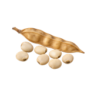

होम / ग्वार

ग्वार का भाव आज | Guar Mandi Price Today
ग्वार का भाव आज जानना किसानों और व्यापारियों के लिए ज़रूरी है। इस पेज पर मेड़ता, नागौर, बीकानेर और जोधपुर जैसी उपलब्ध मंडियों में ग्वार के न्यूनतम, मॉडल और अधिकतम भाव प्रति क्विंटल में देखें। गुणवत्ता, आवक और नज़दीकी मंडियों की तुलना से बेहतर फैसला लिया जा सकता है।
Check available Guar mandi prices before you sell. Compare minimum, modal and maximum rates with quality, arrivals and nearby market records.
ग्वार का भाव कैसे देखें और रेट किन बातों से बदलता है
यहाँ ग्वार को seed crop के रूप में देखा जाता है, सब्जी के रूप में नहीं। इसका भाव दाने की गुणवत्ता, नमी और प्रसंस्करण मांग के कारण अलग हो सकता है।
आज का ग्वार भाव कैसे देखें
इस पेज की मंडी-वार तालिका में न्यूनतम, मॉडल और अधिकतम भाव देखें। अपनी नज़दीकी मंडी तथा उपलब्ध दूसरी मंडियों के भाव की तुलना करके फैसला लेना अधिक उपयोगी रहता है।
- अपनी मंडी या राज्य चुनकर भाव देखें।
- न्यूनतम, मॉडल और अधिकतम भाव में अंतर समझें।
- पुराने और नए उपलब्ध रिकॉर्ड में फर्क देखकर निर्णय लें।
गुणवत्ता और ग्रेड का असर
ग्वार में दाने की सफाई, नमी, रंग, आकार और विदेशी पदार्थ की मात्रा lot की कीमत बदल सकती है। साफ और सूखा माल अलग grade में आता है।
आवक, मांग और बाजार
ग्वार gum और अन्य प्रसंस्करण की खरीद, मौसमी आवक तथा stock की स्थिति बाजार के रुझान पर असर डाल सकती है।
ग्वार बेचने या खरीदने से पहले ध्यान रखें
- ग्वार seed के भाव की ही तुलना करें।
- नमी और सफाई पर ध्यान दें।
- बीकानेर, नागौर या अपनी नज़दीकी उपलब्ध मंडी का record देखें।